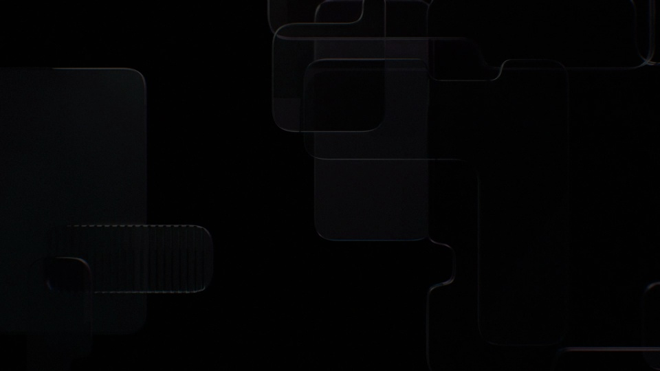
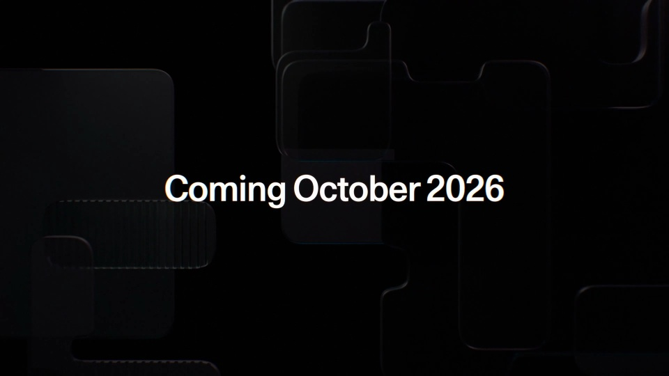
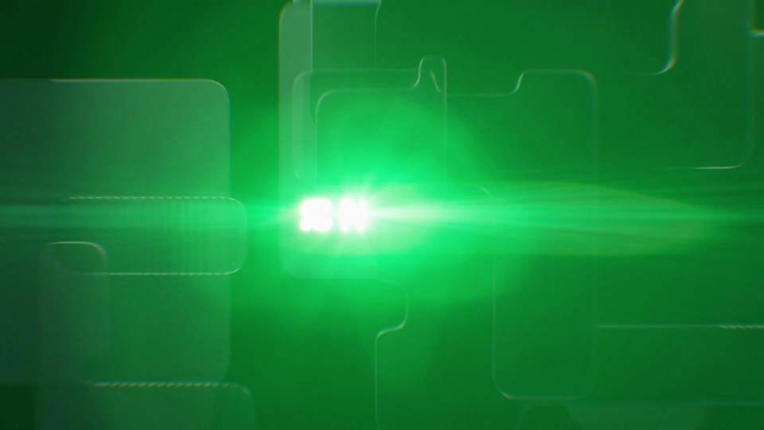
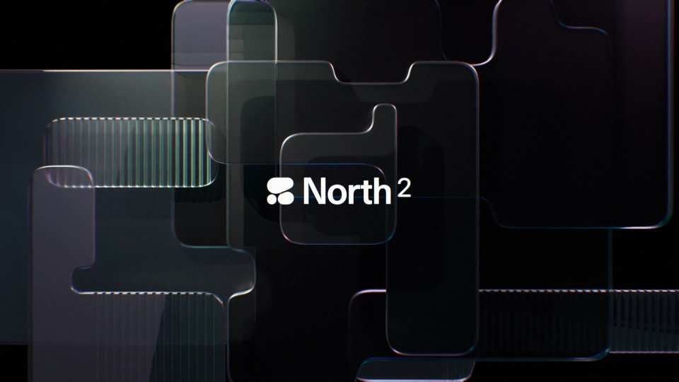
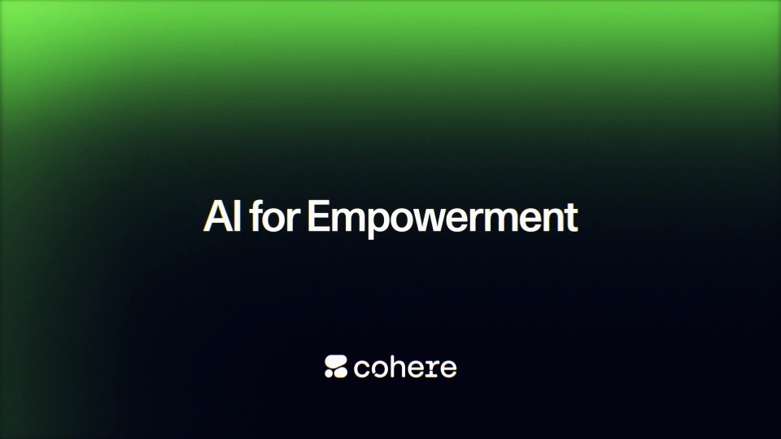

Cohere / V181
North 2 — coming October 2026
用一道绿色扫光揭开新产品名称，透明层和暗色极光保持克制；最后将产品名转成两句短承诺。
构图与编排 可播放 · 可替换内容
整体编排规则示例
查看 HTML 源码
<!doctype html><html lang="zh-CN"><meta charset="utf-8"><meta name="viewport" content="width=device-width,initial-scale=1"><title>North 2 — coming October 2026 · sequence</title><style>html,body{margin:0;width:100%;height:100%;overflow:hidden;background:#020608}canvas{display:block;width:100%;height:100%;object-fit:contain}</style><body data-mode="sequence"><canvas width="1000" height="600"></canvas><script src="data.js"></script><script src="common.js"></script><script src="scene.js"></script><script src="bridge.js"></script></body></html>画面元素玻璃面绿色光带产品名称日期品牌标
MOTION LANGUAGE
动作与构图
局部动作 · 构图规则
01
让扫光先到，名称随后清楚
让扫光先到，名称随后清楚规则示例
查看 HTML 源码
<!doctype html><html lang="zh-CN"><meta charset="utf-8"><meta name="viewport" content="width=device-width,initial-scale=1"><title>North 2 — coming October 2026 · sequence</title><style>html,body{margin:0;width:100%;height:100%;overflow:hidden;background:#020608}canvas{display:block;width:100%;height:100%;object-fit:contain}</style><body data-mode="clip" data-start="2.7" data-end="5.5"><canvas width="1000" height="600"></canvas><script src="data.js"></script><script src="common.js"></script><script src="scene.js"></script><script src="bridge.js"></script></body></html>黑蓝底上放两三片错位透明板，边缘只留细亮线。横向绿光穿过中心时揭开文字，光离开后文字保持稳定。
02
背景只做缓慢空间变化
玻璃面沿深度轻移，极光缓慢流动。不要让背景和文字同时大幅旋转；产品名称占中心，日期放上方并缩小。
03
末段用短句收束
名称后接方向与能力主张，最后才出现品牌。更换产品时准备一个短名称、一个时间节点与两句承诺，保持白字和绿光的主次。
SEQUENCE
段落与节奏
点击段落，定位到上方编排示意。





画面参考 · 离散静帧
KEEP THE RELATIONSHIPS
制作其他主题
- 替换短产品名、日期与两句主张；保留扫光揭示。
制作约束
玻璃面 / 绿色光带 / 产品名称 / 日期 / 品牌标
- 黑蓝底上放两三片错位透明板，边缘只留细亮线。横向绿光穿过中心时揭开文字，光离开后文字保持稳定。
- 玻璃面沿深度轻移，极光缓慢流动。不要让背景和文字同时大幅旋转；产品名称占中心，日期放上方并缩小。
- 名称后接方向与能力主张，最后才出现品牌。更换产品时准备一个短名称、一个时间节点与两句承诺，保持白字和绿光的主次。